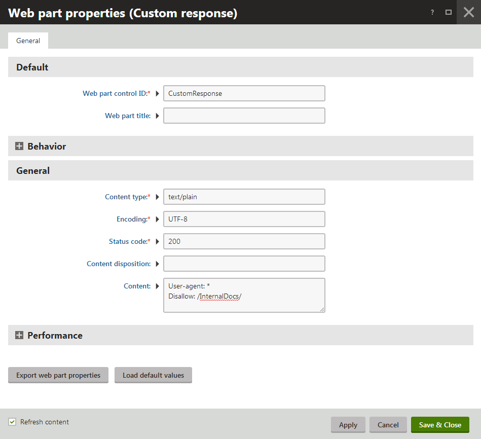

Managing robots.txt
You can give instructions to web crawlers and other robots using the Robots Exclusion Protocol, i.e. a robots.txt file. The primary purpose of robots.txt files is to exclude certain pages from search engine indexing. Like with Sitemaps, the provided instructions are only considered as recommendations and may be ignored by some robots.
Creating a robots.txt file for your website
The most direct way to use robots.txt in Kentico is to physically add the text file into the root of your web project. However, this scenario does not allow you to assign different robots.txt files to specific websites (if there are multiple sites running on your installation). Additionally, it may be difficult to access the file system in certain types of hosting environments.
The recommended approach is to create a dedicated page in your site's content tree and make it return the appropriate text response:
Open the Pages application.
Create a standard Page (menu item) page.
You can use the predefined SEO -> Robots.txt page template to quickly implement robots.txt pages.
Add a Custom response web part to the page.
Configure (double-click) the Custom response web part to generate a valid robots.txt response according to the following steps:
Set the Content type property to text/plain.
Enter an appropriate Encoding type, for example UTF–8.
Set the Status code of the response to 200.
Add the actual robots.txt instructions into the Content property, just like you would in a physical text file. This property supports K# macro expressions, so you can dynamically load values from the current system data if needed.

Configuring the Custom response web part to generate a robots.txt responseOpen the Settings application and select the URLs and SEO category.
Enter the path of your robots.txt page into the Robots.txt path setting.
You can specify a different value for each site by using the Site selector above the settings tree.
The output of the specified page is always available under the standard <website domain>/robots.txt URL, regardless of the page's location in the content tree. Compliant web crawlers read the instructions from this URL before processing other pages on the website.
Enabling the .txt extension
To ensure that the <domain>/robots.txt URL is available, you need to configure your application to handle all request extensions:
Edit your application's web.config file.
Find the system.webServer section directly under the web.config root (i.e. not under a specific <location> element).
Set the runAllManagedModulesForAllRequests attribute to true for the opening tag of the <modules> element:
<system.webServer><modules runAllManagedModulesForAllRequests="true">...</modules>
Excluding pages manually
You can also configure individual pages to be excluded from search engine listings without the need to prepare a robots.txt file.
Open the Pages application.
Select the given page in the content tree.
Open the Properties -> Navigation tab.
Enable the Exclude from search property.
Click Save.
The system automatically adds the following meta tag to the <head> section in the HTML output of such pages:
<meta name="robots" content="noindex,nofollow" />This instructs web crawlers not to index the page and to ignore any links in the content.